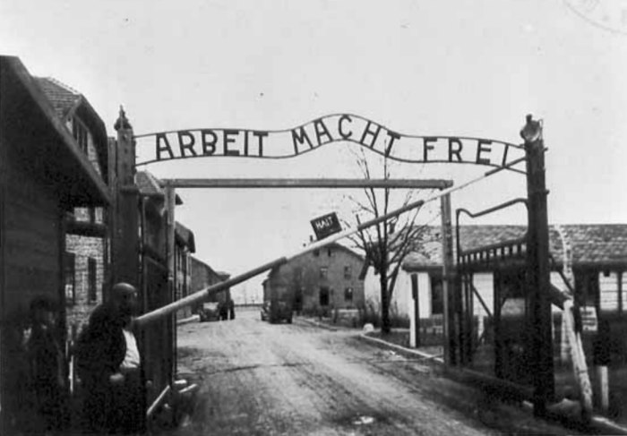

I wrote this after the Holocaust; it was my way of thanking my sister for the advice and help she gave me. I can still remember her, through these words…
“It’s never an insult to be called what somebody thinks is a bad name. It just shows you how poor that person is, it doesn’t hurt you.” Back then, I was ashamed to be a Jew, I had thought that there was something wrong with me that made the world hate me. But with the help of my family and friends, I’ve come to the understanding that I should be proud to be a Jew, and no Nazi soldier can ever change that. Here is my story.
It was so long ago that I don’t remember when it started. All I know is that we’ve been on the run ever since, ever since I was born. Growing up without my parents had changed my life. When I was four, I heard from my uncle that they died in the Buchenwald concentration camp. I never met them. All I could look back to was my old family photos, of my mother and father. Being a child on the run, I couldn’t experience childhood like other children my age. I learned to grow up quickly. It was almost like a 6th sense. I knew well enough to keep quiet all day, and to never whine about being hungry. I’d accepted that this was my life now.
I remember when I was six, my Uncle was taken by the Nazis. It was May 3rd 1939. I heard about how traumatic it was when my parents were taken, but I’d never witnessed it in front of my eyes. Three men crashed into the basement of Heinrich’s drug store, lifting the trap door that concealed us from the Nazis. They each had guns, and when I started to scream, Abigail, my sister, covered my mouth and we slowly backed away into the shadows. We knew the routine, each us would take a brother, even though there are actually cousins and escape a different way and meet in the 2nd street alley. I picked up Aaron, and my sister took Isaac and we went our separate ways.
As I climbed up the ladder to go outside, I looked behind me. One of the soldiers saw me. I quickly ran as fast as I could and I reached the dark alley right when my sister did. The boys were crying, they were my Uncle’s kids and one was 18 months, while one was 3. We waited for my Uncle to arrive. We waited for what felt like hours, but he never came. We came to the undeniable truth that the Nazis must have taken him. There was never time to go back for him, if someone was taken, we had to pray that we will see them again.
Without my Uncle, we were giving up hope, well I was anyways. My sister always stayed strong, but I could see the weariness growing in her eyes, day by day. Our parents being taken away had took a toll on her as well, and I could see her trying to keep me and the boys safe. As much as we both wanted each other near us, we both knew that when the Nazis came, there was no time for saving your friends. If Abigail was ever taken, I knew that there was no going back for her, it would become my duty to keep the rest of the family safe. I remember when I was little it was hard to sleep from the fear that they would take us that night, but my sister always reassured me, she would say, “Things are always better in the morning.” That would make me smile and sleep peacefully
After my Uncle was taken, we started to travel. We hid in the day and traveled steadily through the night. We slept in old barns, and abandoned shacks along the way. My sister’s goal was to go to America, a foreign name to me. I asked her one night, “what is america?” She replied, “A place of happiness.” I was confused as to what it could be. Abigail told us that we were heading for France, where we will try to go to America. I’d never saw a 16 year old more determined to help us than her. But frankly, she was the only one I knew at the time. We had smugglers take us across the border and we hoped to find freedom and safety with the French, but when we arrived in Paris, they had already surrendered to the Nazis.
Our hearts sunk that day, 6 months of traveling for nothing. We wandered around the city hopefully looking for sanctuary, but found no hope for us. We were surely gonners. We went back to hiding then, living in and abandoned barber shop. The glass had been broken on the windows, and blood was smeared on the walls. Wanted posters flew around inside the shop, getting carried in the drafty wind. It was the day my sister gave me some great advice. She had said, “Until I feared I would lose it, I never loved to read. One does not love breathing.”
My sister always wanted me to have a normal childhood. She told me that she made a mistake of not appreciating the great times that she had, and now that they are all gone, there is nothing to look back to. She tells me that I need to enjoy my life while I can and find fun in the little things I do, because if I’m captured, then I’ll have something great to look back on.
That stuck with me, in the years to come, it may have been the reason I survived, it might have been the push that kept me going. It gave me hope, to keep living life to the fullest.

This image symbolizes the gates of horror that she fears will draw near to her, and possible her fate, waiting for her.
Image site: http://www.holocaustresearchproject.org/othercamps/auschwitzht.html